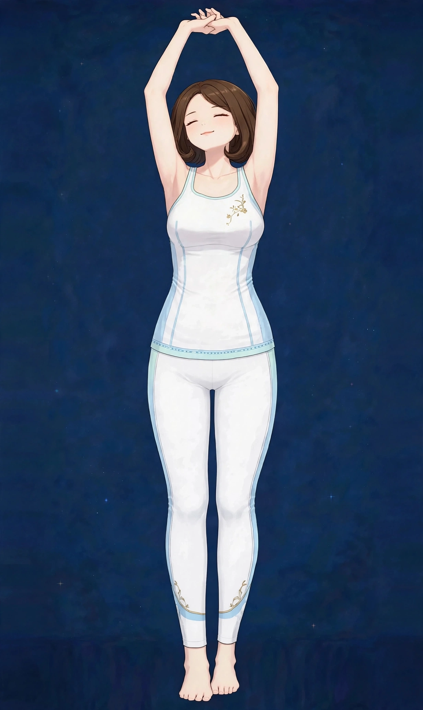
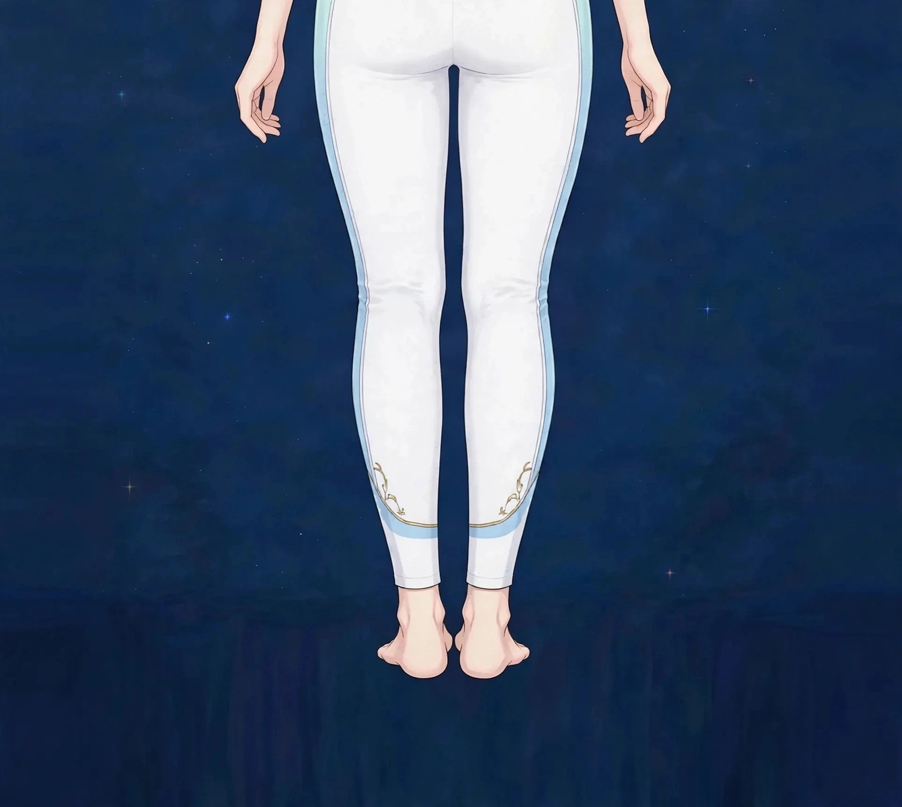

梅田で仕事帰りに気になる疲労感｜要因の整理とセルフケア、受診の目安ハウツー

梅田で働く・暮らす方へ。仕事を終えた夕方に「体全体が重い」「帰宅したら何もしたくない」と感じる疲労感について、一般的な解説と考えられる要因の整理、日常で取り入れられるセルフケア、医療機関への受診の目安をまとめました。一般的な健康情報としてお読みください。
#梅田 疲労感#仕事帰り 疲れ#疲労感 セルフケア#梅田 女性専用 サロン 疲労#夕方 疲労感 ケア
仕事帰りに気になる疲労感とは（一般的な解説）
疲労感とは、病名ではなく、「体が重い」「だるい」「休みたいのにうまく休めた気がしない」と感じる感覚を表す言葉として使われることがあります。朝は平気だったのに、仕事が終わる頃になって全身の重さに気づく、帰りの電車で座り込むと立ち上がるのがおっくうに感じる——そんな訴えは、働く女性からよく聞かれます。感じ方には個人差が大きく、デスクワークの日と外回りの日、忙しい週と落ち着いた週でも変わるとされます。
大切なのは、「以前の自分と比べてどうか」「どんな日に気になりやすいか」という視点です。残業が続いた日、会議や画面作業が長かった日、眠りが浅かった日の翌日など、気になりやすい場面を簡単に記録しておくと、自分の傾向がつかみやすくなります。この記事では、仕事帰りに気になる疲労感の一般的な解説と、背景として考えられる要因の整理からお伝えします。なお、疲労感の強さだけで体の状態を判断することはできません。気になる変化が続く場合は、後半の「受診の目安」もあわせてご確認ください。
考えられる要因の整理
1つ目は、一日の体の使い方と、同じ姿勢の続き方です。デスクワークでは、肩や首、背中が小さな緊張を続けたまま夕方を迎えやすく、立ち仕事や外回りの多い日は、脚まわりの負担が積み重なりやすいとされます。座る・立つといった姿勢の切り替えが少ない日ほど、夕方になって全身の重さを感じやすいと訴える方がいます。ただし、感じ方には個人差があり、「これが原因」と決めつけられるものではありません。
2つ目は、緊張の続き方と、頭の使いすぎ感です。会議や締め切り、人とのやり取りが続いた日は、体を大きく動かしていなくても、仕事が終わる頃にどっと疲れを感じることがあるとされます。画面を見続ける時間が長い日は、目や首・肩のこわばりと一緒に疲労感を自覚しやすい、という声も聞かれます。仕事が終わっても頭の切り替えがうまくいかず、帰宅後も緊張が抜けないと感じる方もいます。
3つ目は、睡眠や食事、生活リズムとの関わりです。眠りが浅い日や就寝時刻がずれる日が重なる、昼食が軽かった、夕方まで水分が少なかった、といった日常の要素が重なると、仕事帰りの疲労感を強く感じやすいことがあるとされます。東洋医学では、こうした疲労感を、体を支える「気」の巡りや、消化と関わりが深いとされてきた脾（ひ）の働き、生命力の土台とされる「腎（じん）」と重ねて捉えることもあります。脚の内側を流れる脾経や、腰まわりと関わりが深い腎経のエリアともあわせて考えられてきました。要因はひとつではなく、その日の働き方や体調によって組み合わせが変わるため、思い当たるものをひとつずつ見直すことが大切です。
だるさと関係しやすい体の部位は、図1のとおりです。
図1｜だるさと関係しやすい体の部位

日常で取り入れられるセルフケア
まずは「仕事終わりに、体を切り替える小さな動きを入れる」ことです。帰る前に席を立って少し歩く、肩を大きく回す、首をゆっくり左右に倒すなど、固まっていた部位を軽く動かしてから帰るだけでも、夕方の過ごし方は変わります。帰り道でひと駅分歩く、階段を使うといった日常の歩行も、無理のない範囲であれば取り入れやすい方法です。痛みを感じるほど強く伸ばす必要はありません。
次に「温めて、夕食と休息のリズムを整える」ことです。帰宅後に湯船につかって全身を温める、時間がない日は足湯で足元だけでも温める、といった方法は、冷えてこわばった部位をいたわる基本とされます。夕食は温かい汁物を一品添えるなど、体を冷やしすぎない工夫も日常に取り入れやすいものです。食事を抜いたまま夜更かしするよりも、軽くでも食べて早めに休む流れを整えてみてください。
あわせて、眠る前の画面時間を区切る、就寝時刻を大きくずらさないなど、眠りの準備を整えることも大切とされます。ただし、セルフケアはあくまで日常の疲労感への対処です。特定の食品や健康食品、方法に頼りすぎたり、疲れを我慢して予定を詰め込みすぎたりしないようにしてください。疲れが強い日は、ケアよりもまず休むことを優先することも大切です。
仕事帰りに気になりやすい脚の部位は、図2のとおりです。
図2｜足の疲れと関係する部位（背面）

受診の目安｜こんなときは医療機関へ
仕事帰りの疲労感の多くは、一日の体の使い方や緊張、睡眠や食事といった日常の要素が重なって感じられるとされますが、中には医療機関での確認を優先したいサインもあります。「休んでも疲労感が長く続く、少しずつ強くなっている」「発熱や体重の急な変化、動悸や息苦しさを伴う」「強い痛みやしびれを伴う」「気持ちの落ち込みが強く、長く続いている」「日常生活や仕事に支障が出るほどつらい状態が続いている」といった場合は、セルフケアで様子を見続けず、内科など医療機関への受診をおすすめします。
また、疲労感の背景には、貧血や甲状腺の働きなど、検査で初めて分かる要素が関係していることもあるため、気になる状態が続く場合は一度相談してみてください。当店のケアはリラクゼーションを目的としたボディケアで、疲労感や病気を診断したり、それらに対応したりするものではありません。医療機関での確認を優先したうえで、日常のコンディションを整える選択肢のひとつとしてご利用ください。
当店でのケアとサロンのご案内
ステラポラリスは、大阪・梅田エリアのレンタルサロンで施術する女性専用・完全予約制のサロンです。営業は月〜土17:00〜22:00（日曜休み）で、仕事帰りの時間帯に合わせやすい設定です。施術はオイルマッサージと美容整体、料金は90分10,000円です。ご予約はLINE公式アカウント「ポラリス美容整体院」で受付中です。場所は大阪市北区堂山町12-5 ロイヤルハイツ梅田Ⅱ 303号室（レンタルサロンACE内）、中崎町駅から徒歩5分・阪急梅田駅から徒歩8分です。入室方法の詳細はご予約確定後にLINEでご案内します。
施術では、その日の体調や気になる部位をうかがい、首・肩・背中から腰、脚を含めた全身を順にほぐしながら、巡りを意識したケアを組み立てます。静かに休みたい日はその過ごし方も選べますので、遠慮なくお伝えください。担当は施術歴30年・鍼灸師資格を持つセラピスト1名で、当店では鍼灸施術は行いません。関連するお悩みページ「全身の疲れ」「体のだるさ」や、経絡ページ「脾経」「腎経」でも、体の見方やケアの考え方を紹介していますので、あわせてご覧ください。料金や営業時間の詳細は、このページ上部のメニュー・料金案内でもご確認いただけます。
関連するお悩みページ
関連する経絡ページ
ほかのブログ記事
さらに学びたい方へ：現場で使われる専門書（PR）
このページのテーマに合わせて選んだ本と、当店の施術でも参考にしている専門書です。


※本ブロックのリンクはAmazonアソシエイト・プログラムおよび楽天アフィリエイトによる広告リンクです。使用感の保証をするものではありません。